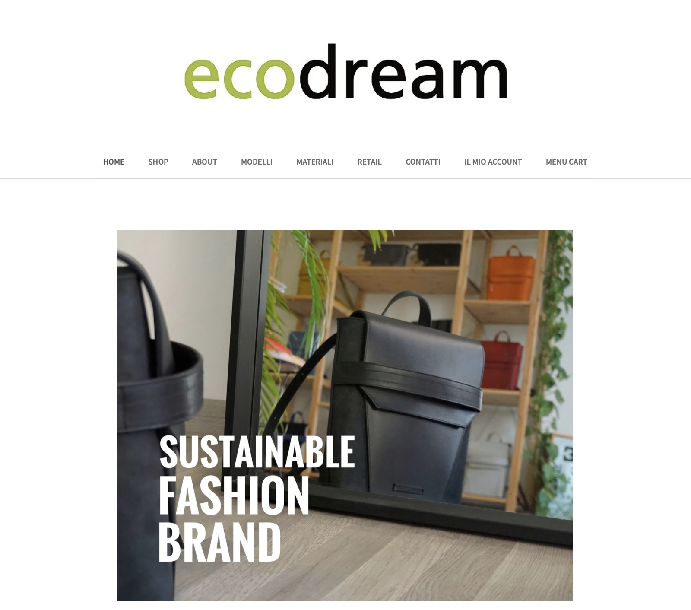
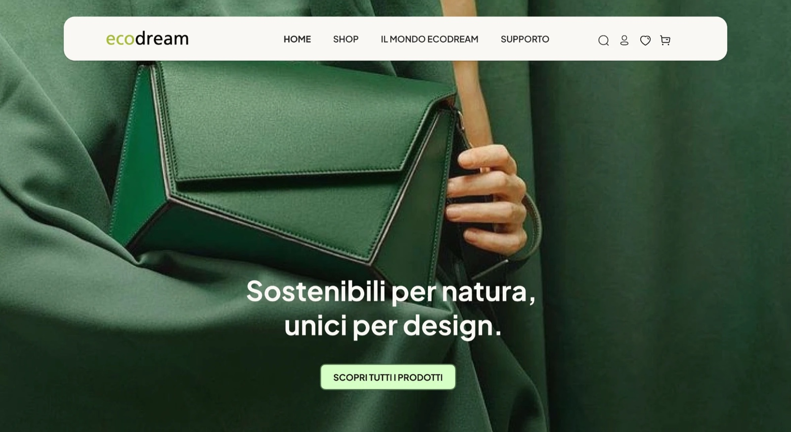
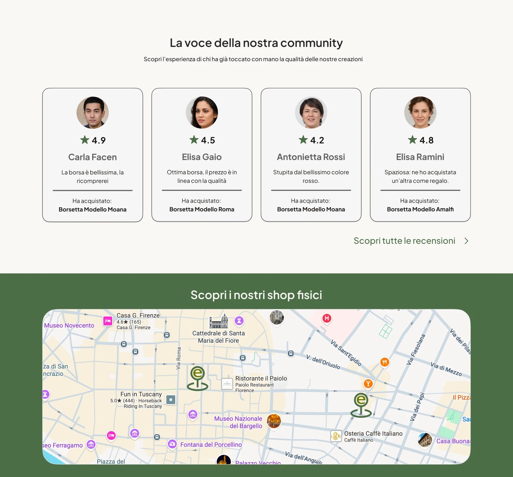
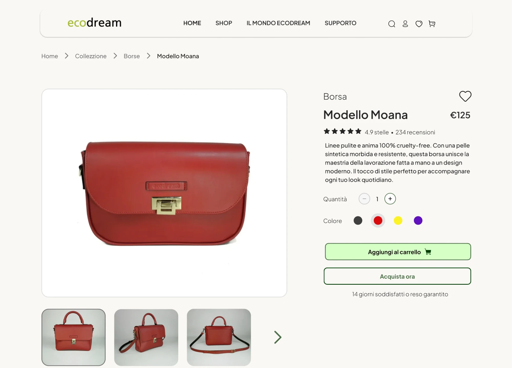
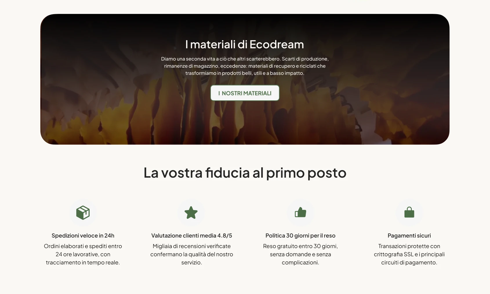
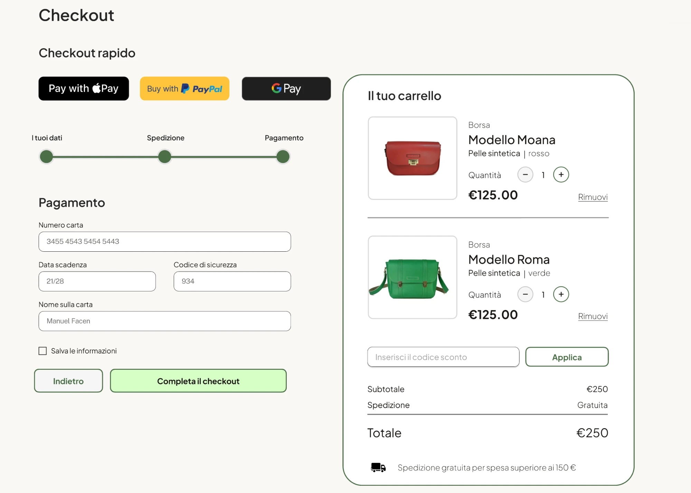

Ecodream
Il restyling di un sito web datato: ho ripensato da zero l'esperienza utente e ridisegnato completamente l'interfaccia, su desktop e su smartphone.

La sfida
Il sito di Ecodream era datato: contenuti difficili da trovare, una navigazione confusa e un'interfaccia poco leggibile su smartphone. Bisognava renderlo chiaro, moderno e coerente con i valori del brand.
Il processo
Ho analizzato il sito esistente e i principali competitor per individuare i punti critici del percorso utente. Poi ho riorganizzato l'architettura dell'informazione, definito i flussi principali e progettato i wireframe, iterando fino all'interfaccia finale.

Prima
DopoIl risultato
Un sito responsive con una gerarchia dei contenuti chiara, una navigazione più semplice e un'interfaccia pulita. Ogni pagina accompagna l'utente verso ciò che cerca, su desktop come su smartphone.
Vedi il progetto completo ↗


